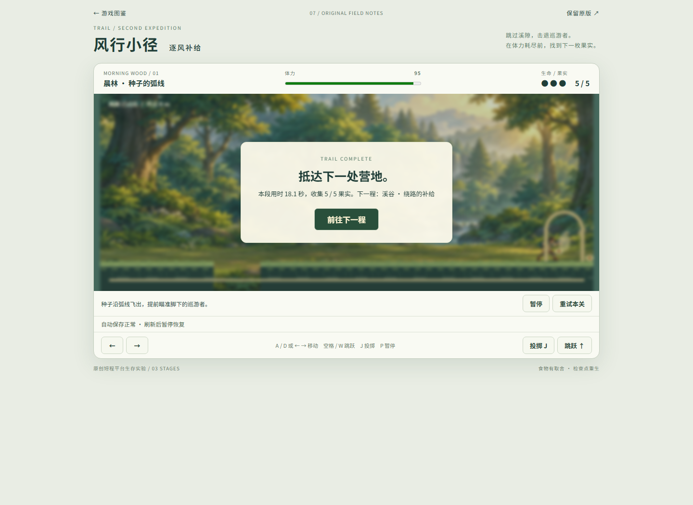
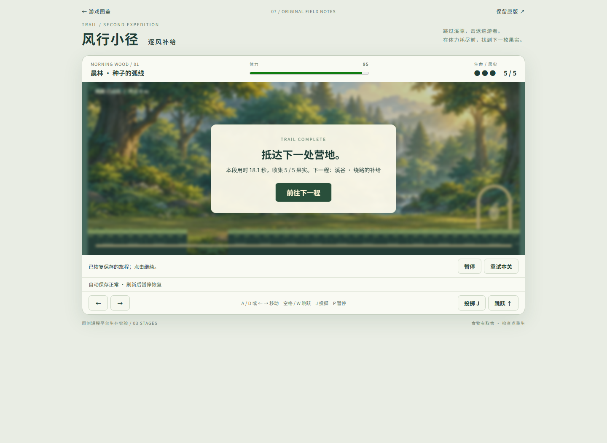
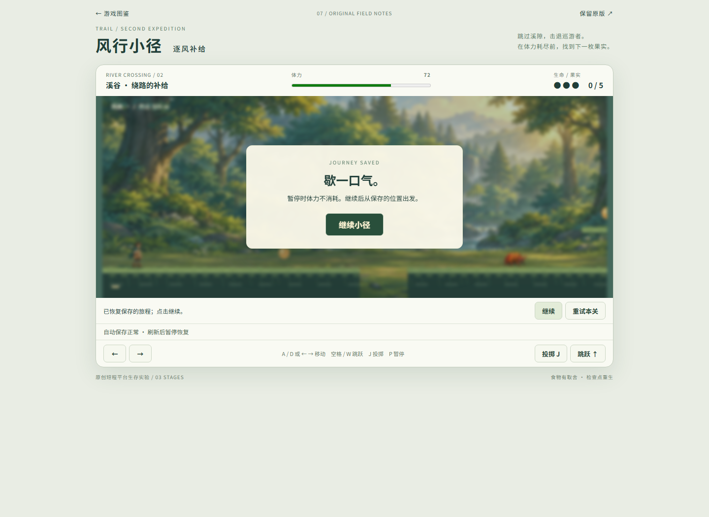
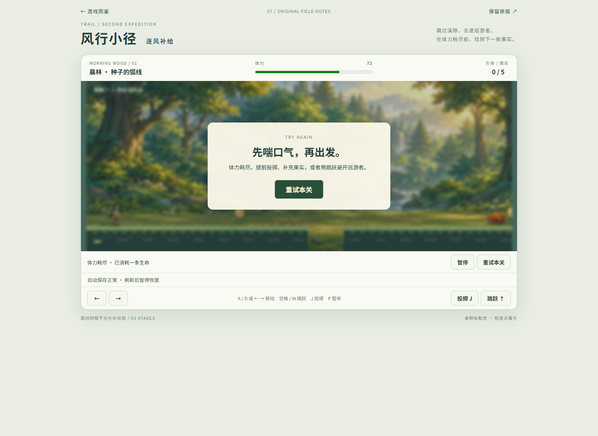
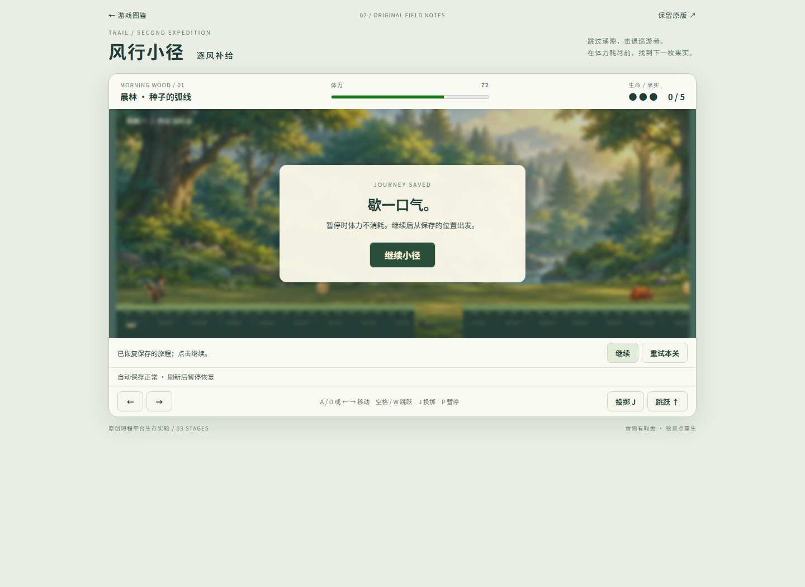

风行小径 · 首段完整流程
普通键盘辅助路线自然抵达营地：18.07秒、5果、3命；结算刷新与第二段干净入口通过。另一个普通新局自然耗尽体力至0命失败，重试与刷新通过。未改游戏。
方法与限制 · 成功UI · 自然失败UI · 打开游戏
first-stage-result.png
result-refresh-kept.png
second-stage-clean-paused.png
natural-energy-total-loss.png
loss-retry-refresh-paused.png